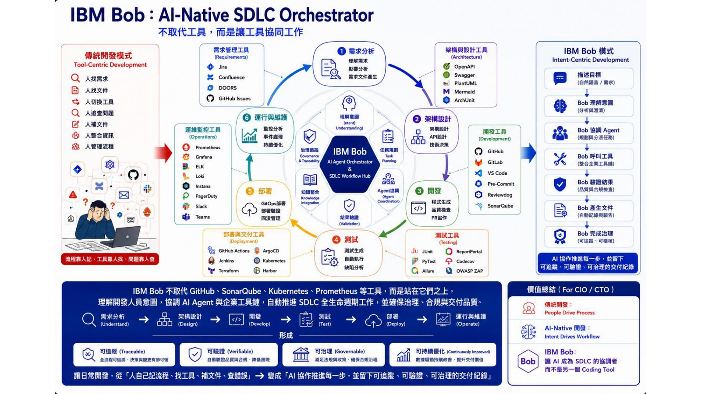

摘要
本議程原始投影片 PDF 缺乏可擷取文字層，以下內容依據議程提供之補充說明整理。講題聚焦企業 AI 應用從簡單問答式（ASK）互動邁向具自主行動能力的 Agentic AI 的轉變，並介紹 IBM 推出的「IBM Bob」——一套定位為「AI-Native SDLC Orchestrator」的架構，用以協調軟體開發生命週期中的多個 AI Agent，藉此加速企業 AI Agent 的普及與價值實現。
重點整理
- 講題核心命題是企業 AI 互動模式從「ASK」（單純問答）演進為具行動能力的「Agent」
- IBM Bob 定位為「AI-Native SDLC Orchestrator」，協調軟體開發生命週期各階段的 AI Agent
- 目標是加速企業 AI Agent 的普及與價值實現
重點圖片／架構圖

背景與挑戰
由於原始投影片文字層難以擷取，內容主要依據議程簡介與講者背景整理。講題背景設定在企業 AI 應用逐漸從單純的問答式「ASK」互動，轉向具備自主規劃與行動能力的 Agentic AI，企業需要新的方法加速這類 Agent 的落地與價值兌現。
解法與架構
IBM 提出「IBM Bob」，定位為「AI-Native SDLC Orchestrator」，用以協調軟體開發生命週期（SDLC）中各階段的 AI Agent 協作，藉此加速企業導入與擴展 AI Agent 應用。
技術重點
受限於投影片文字擷取不完整，技術細節無法從原始文字內容進一步還原，僅能確認其架構圖聚焦於 SDLC 各階段 Agent 的協調與整合。
結論與啟示
講者以「從 ASK 到 Agent」總結企業 AI 應用的典範轉移，強調唯有透過像 IBM Bob 這樣的協調層，才能讓企業更快速、更大規模地實現 AI Agent 的普及與價值。